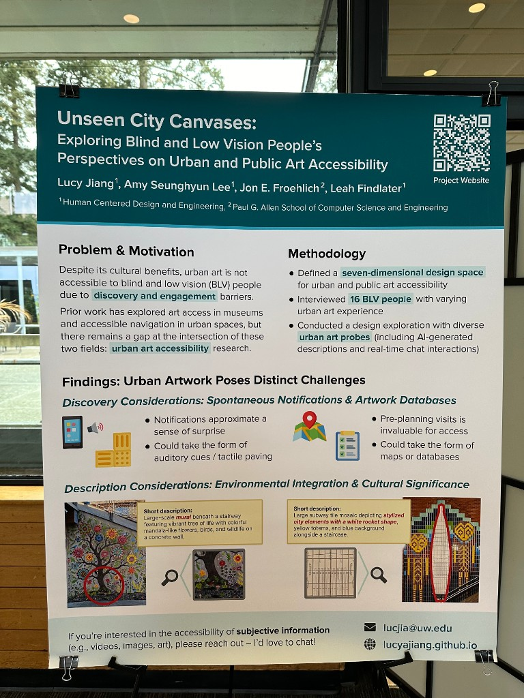
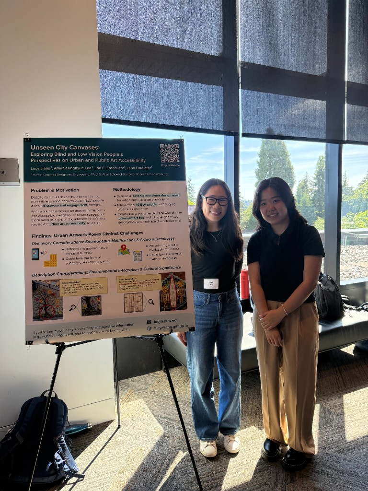
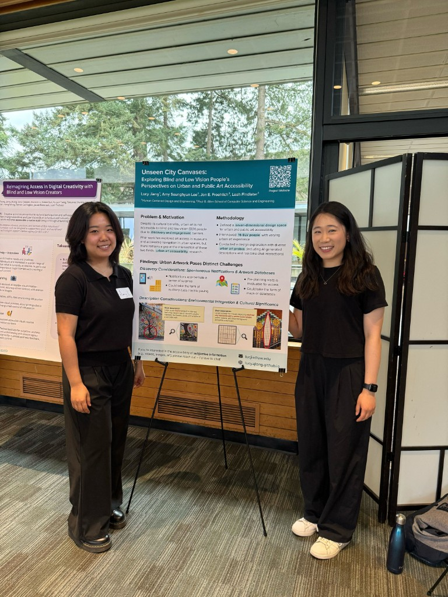

Motivation
Public art is critical to shaping urban environments, fostering community identity, enhancing aesthetic appeal, and improving economic outcomes. Public and urban artworks are often community-driven, rooted in activism, and directly connected to their audience. However, public art is rarely accessible to blind and low vision (BLV) people due to barriers in both discovering and engaging with the artwork, excluding them from its significant aesthetic, cultural, and community-building benefits.
Prior work by both practitioners and researchers has examined the accessibility of visual arts in museums, galleries, and other private settings. For example, some museums provide descriptive touch tours, verbal descriptions, and braille and digital versions of print information. Researchers have explored integrating touch, audio, and description capabilities for multisensory art experiences as well as leveraging AI to generate artwork descriptions. Most prior work on art access is limited to museums and galleries, which are highly curated contexts featuring defined pathways and centralized organization. Furthermore, prior work on BLV urban accessibility has focused primarily on functional applications, such as navigation and wayfinding, but much less research has addressed leisurely and cultural experiences in urban spaces, a right for all as affirmed by the United Nations. As such, urban art accessibility is largely unexplored, leaving a gap in understanding BLV people’s preferences for public art accessibility — including both the exploration and engagement experiences — given the more dynamic, decentralized, and less organized nature of urban spaces compared to museum and gallery settings.
Method
To examine BLV people’s perspectives on challenges and opportunities with urban art, we conducted semi-structured interviews consisting of a reflection on prior art experiences and a design exploration with six probes. This study was approved by our Institutional Review Board.
Participants
We recruited 16 BLV participants through mailing lists and existing connections to disability organizations, using a mix of purposive and convenience sampling to reach people across the United States with diverse public art experience. Participants were required to be at least 18 years old and comfortable communicating in English. We did not require participants to have background or interest in urban and public art. Twelve participants identified as blind, two as legally blind, and two as visually impaired. Some participants had color and light perception while others were completely blind. Ten participants identified as women, five as men, and one chose not to disclose. Seven identified as white or Caucasian, four as Hispanic or South American, three as Asian or South Asian, one as Native American, and one preferred to not disclose. Participant ages ranged from 26 to 91 years old (M=46.2, SD=16.6). They had various levels of engagement with urban art (e.g., Participant G and Participant M identified as artists) and lived in different states such as Washington, Illinois, New Jersey, and Florida.
Procedure
Study sessions were composed of two parts. In Part 1, we asked participants about their prior experiences with art in both urban contexts and curated settings (e.g., museums, galleries). In Part 2, we introduced six urban art design probes to contextualize and ground discussion. Sessions lasted approximately 90 minutes and were conducted remotely via Zoom. Our virtual approach enabled detailed exploration of a wider range of artwork probes and greater geographic diversity of participants. Participants were compensated with a $45 gift card upon completing the study. We invited, but did not require, participants to share a public artwork of interest to discuss during the study.
Part 1: Prior Art Experiences. We first asked participants about their experiences with urban and public art, including how they engaged with art, where it was, how they found out about it, and their general perspectives. We then inquired about key challenges with accessing art non-visually, how they discovered art pieces, and factors that lessened engagement or interest. To contrast these experiences with curated art contexts, we asked about prior experiences at museums and galleries, how access and discovery methods might translate to public settings, and how their goals and experiences differed in urban environments.
Part 2: Design Exploration. To further explore these ideas, we conducted a design exploration across six urban art contexts, building on prior work using probes for data collection and participatory design. The probes served to extend and concretize participants’ lived experiences rather than replace them. Each probe had three components: (1) a public artwork image representing diverse points in our design space, (2) pre-generated short and long AI descriptions, and (3) real-time AI chat interactions where participants could ask follow-up questions. This probe design allowed us to evaluate both static AI description quality and interactive AI dialogue for art accessibility, and facilitated exploration of different points in our design space: murals, mosaics, and sculptures (type) of different sizes and heights (scale, tactility) and located in diverse settings (visitor goal, density). For example, we categorized Probe B as medium-sized and mostly reachable, despite its size, given the variation between the textured tiles, trunk, and concrete. In contrast, Probe C was a fountain with small, tactile animal sculptures but the water feature and its low height made it less readily and comfortably reachable. For this study, we did not select probes based on artist purpose as such information is not readily available for all artwork, and we could not predetermine sociability.
We used the probes as an opportunity to ground speculation and design discussions about non-visual art access, BLV art engagement and discovery, and the potential role of technology, including AI. Virtual design probes enabled us to present diverse urban artworks spanning our design space, which would have been logistically difficult to replicate through in-situ visits with participants across the United States. Prior to the interviews, we generated short and long descriptions using Claude 3.7 Sonnet, developing our prompt based on guidance from prior work while intentionally keeping the prompt concise to approximate realistic usage of current off-the-shelf AI tools. For both description lengths, four of six descriptions were accurate; Probe B had an artwork type error and Probe E featured an artwork content error. Despite being prompted to do so, the short descriptions for Probe A and Probe C did not mention scale. We did not alter the output to improve ecological validity and to enable discussion about potential errors or ambiguities. The prompt is below and full generated descriptions are provided in Appendix B.
“Describe this artwork with a short description that is less than 20 words. Mention what type of art it is, its scale, and other visually salient details such as the subject of the artwork and colors. Then, describe this artwork with a longer description that is around 50 words. Include details about the type of art, its scale, and other visually salient details such as the subject of the artwork and colors.”
To facilitate the design exploration, we offered to share our screen to visually show the probes to all 16 participants, with seven opting in. For each probe, regardless of whether the participant was viewing the shared screen, we first read out the short description to establish a baseline understanding of the artwork unless the participant explicitly asked for the long description (N = 1). Then, we solicited initial reactions, ideated about potential access solutions, and invited participants to ask follow-up questions to the AI system (Claude 3.7 Sonnet). The interviewer submitted each question and the corresponding probe image to the AI system, then read out the response verbatim to participants, who could ask additional questions if desired. After presenting all probes, we engaged in a reflection about preferred methods to learn about, navigate to, and engage with urban and public art. We encouraged participants to organically share suggestions before specifically introducing ideas such as spatial audio, tactile graphics, and augmented reality. We concluded with questions about the role of AI in providing artwork descriptions and the relationship between urban artwork context (e.g., location, crowd density) and desired information.
Data Analysis
We recorded and transcribed all interviews. In line with codebook thematic analysis principles, the first author developed a preliminary codebook through hybrid coding, generating inductive codes that captured participant-driven ideas (e.g., spontaneous art discovery, safety concerns) alongside deductive codes connected to theoretical concepts (e.g., dimensions of the design space). The codebook was discussed with all coauthors and iteratively refined. The first author then individually coded all transcripts and the second author reviewed a randomly selected half of the coded transcripts for missed codes or unclear applications, which we resolved via discussion. We used the codebook to chart development of analysis rather than measure reliability. The final codebook contained codes pertaining to participants’ prior interactions with, perspectives on, and interest in private and public art settings. To distinguish participant-generated ideas from researcher-prompted ideas, we used distinct code prefixes for participants’ organic suggestions (e.g., suggestion: tactile: map) and their reactions to specific technologies or designs we introduced (e.g., reaction: audio: music). The first and second author also coded AI outputs for accuracy. For the descriptions, we adapted a subset of codes to create ternary assessments for output attributes (accurate, omitted, or inaccurate). For AI responses to participant questions, we identified if and how outputs contained inaccurate information (inaccuracies) or if the system declined to answer the question (refusals). With input from the research team, the first author actively constructed themes from the codes, data, and research questions to form the findings.
Positionality
Our team is composed of sighted researchers with backgrounds in accessibility research, including prior work in art access, tactile graphics, and AI-generated descriptions. The first author has experience as a visual arts teacher and has co-organized grassroots public art accessibility initiatives. As sighted researchers, we acknowledge that our visual engagement with artwork shaped probe selection and interpretation of participants’ experiences. To counter this bias to some degree, we spoke with a blind urban artist about practices for making his artwork more nonvisually accessible, selected artwork probes such as Probe C for their auditory, tactile, and cultural significance rather than solely visual interest, and invited participants to share and discuss urban artworks of personal interest during the study.
Interview Content
Introduction
Thank you for agreeing to participate in this study! My name is Lucy Jiang, and I am a PhD student researcher at the University of Washington. This project aims to understand how to make urban and public art, such as murals, mosaics, and sculptures, more accessible to blind and low vision people. Our team of graduate students and professors from Human Centered Design and Engineering and Computer Science are working together on this project.
This interview will consist of two main parts:
First, we’ll discuss your experiences, preferences, and challenges with engaging with urban artwork. Then, we'll discuss your previous interactions with artwork in museums and galleries. We will compare and contrast between your experiences in these two environments.
Then, we’ll explore potential designs, technologies, and features that could make urban and public art more accessible.
We estimate that the study will take around 90 minutes. Please remember that your participation in this study is voluntary and that you have the right to stop at any point. Upon completing the interview, you will be compensated $45 for your time and contributions.
At this time, I would like to ask for your permission to record this session. The recording will only be used for research purposes. Would you be okay with that?
Start recording. Participants can choose whether they have their camera on or off for the study.
Just to confirm on the recording, do you consent to us recording this study session?
I sent you the consent form already via email. Please let me know if you have any questions before giving verbal consent. Do you consent to participating in this study? If so, please state your full name and today’s date.
Part 0: Background Questions (5 mins)
To start, I’d like to ask you a few questions to understand your background. If you feel uncomfortable answering any question, just let me know and we will skip the question.
- What is your age?
- How do you identify in terms of ethnicity?
- How do you identify in terms of gender?
- What are your pronouns?
- How do you identify in terms of disability?
- How does your condition affect your day-to-day life?
- Do you identify as blind, low vision, or sighted?
- How would you describe your level of vision?
- Have you experienced loss of vision in your life? If so, can you explain?
- What was your vision like before you lost some of it?
- How old were you when you lost your vision?
- What assistive technologies do you typically use?
- What is your occupation?
- In what city are you located?
Part 1: Prior Experiences (20-25 mins)
Part 1.1: Urban / Public Settings (10 mins)
Goal: To understand existing participant art experiences in an urban and public setting.
We will begin the study with some questions about your prior experiences with art in urban and public settings.
- How often do you encounter art in urban and public settings?
- Art can mean murals, mosaics, sculptures, or anything else that comes to mind.
- On a scale from 1 to 5, where 1 is not interested at all and 5 is extremely interested, how interested are you in urban and public art?
- Why did you choose this rating?
- Can you take a moment to think about a recent time you encountered art in an urban or public setting?
If they do have experience with public art:
Following up on that experience:
- When was it?
- Where did you go?
- What motivated you to go, if anything?
- Who did you go with, if anyone?
- Can you describe the art that you experienced at that time?
- How was the experience? Was there anything specifically memorable (positive or negative)?
- What kinds of art do you typically engage with in these settings?
- How do you typically find out or become aware of art in these settings?
- How do you typically receive access to art in these settings?
- How do you prefer to receive access to urban or public art? Why?
- Tactile graphics / touch tour?
- Audio descriptions / alt text?
- Other?
If they do not have experience with public art:
- What factors have contributed to having less experience or engagement with public art?
- Awareness of public art?
- Interest in engaging, even when knowing that art is there?
- Inaccessibility of the art?
- If you are not particularly interested in public art, are there any other public experiences or activities that you find engaging?
- What would make you more interested in or motivated to explore public art, if anything?
If time:
- How do you typically navigate to art in these settings?
- What are your goals when engaging with art in an urban or public setting?
Part 1.2: Museum / Gallery Settings (5 mins)
Goal: To gain a comparative baseline for how the participant experiences art in a more formal setting.
Great. Now let’s discuss your experiences with art in museums and galleries.
- How often do you go to museums or galleries to engage with art?
- On a scale from 1 to 5, where 1 is not interested at all and 5 is extremely interested, how interested are you in museum and gallery art?
- Why did you choose this rating?
- What kinds of art do you typically engage with in these settings?
- How do you typically find out or become aware of art in these settings?
- How do you typically receive access to art in these settings?
- How do you prefer to receive access to art? Why?
- Tactile graphics?
- Audio descriptions or alt text?
- Touch tour?
- Other?
If time:
- Can you take a moment to think about a recent time you went to a museum or gallery to appreciate visual art?
- When was it?
- Where did you go?
- What motivated you to go, if anything?
- Who did you go with, if anyone?
- Can you describe the art that you experienced at that time?
- How was the experience? Was there anything specifically memorable (positive or negative)?
- What are your goals when engaging with art in museums or galleries?
Part 1.3: Compare and Contrast (5-10 mins)
Goal: To compare and contrast existing experiences between museum and gallery art with urban and public art.
Now, let’s compare and contrast museum and gallery art with urban and public art.
- How are your goals similar or different when engaging with art in these two different settings?
- You mentioned [access measure] for art in museums. How do you think this could translate to urban settings, if at all?
- You also mentioned [discovery technique] for art in museums. How do you think this could translate to urban settings, if at all?
- Are there additional considerations you would like to bring up?
Part 2: Design Exploration (30-45 mins)
Goal: There is lots of public art out there - we aim to probe and explore the opportunity to use AI, tactile graphics, etc. to give people equitable access to that art that they might not have the opportunity to have.
Now, let’s think creatively. We will explore potential designs, technologies, and features that could make urban and public art more accessible. Feel free to draw on your experience with museum and gallery art accessibility, or feel free to come up with your own ideas, ignoring any technological limits, for how art could be made more accessible.
All descriptions were created by Claude 3.7 Sonnet with the prompt:
“Describe this artwork with a short description that is less than 20 words. Mention what type of art it is, its scale, and other visually salient details such as the subject of the artwork and colors. Then, describe this artwork with a longer description that is around 50 words. Include details about what type of art it is, its scale, and other visually salient details such as the subject of the artwork and colors.”
Dimensions for Design Probes
Aspects about the art
- Type (discrete): mural, mosaic, sculpture (motivated in the draft)
- Purpose of art (discrete): monument, memorial, amenity, park, agora, pilgrimage (from the Public Art book), decoration
- Scale (continuous): large, small
- Reachability (discrete): can be reached or touched, cannot be reached or touched
Aspects about the experience
- Goal / intention (continuous): seeking out a cultural or artistic experience (e.g., tourist attraction), walking by leisurely (e.g., streetscape), passing through on the way to somewhere else (e.g., transit center)
- Density (continuous): crowded, isolated
- Sociability (discrete): visiting by self, visiting with friend(s)
Part 2.1: Design Probes
Mura11y - Design Probes
| Name | Type / Purpose / Scale | Density / Goal / Reachability | Location |
|---|---|---|---|
| Untitled - Rhodora Jacob | Mural Decoration Small |
Not super crowded Walking by Can be reached / touched |
Ballard (24th Ave NW and NW Market St) |
| Northwest Microcosm - Clare Dohna | Mosaic Decoration Small |
Crowded Seeking cultural experience Can be reached / touched |
Pike Place Market |
| Water Frolic - Georgia Gerber | Sculpture Decoration Small |
Not crowded Seeking cultural experience Can be reached / touched |
University Village |
| Untitled - Lauren YS | Mural Monument Large |
Not super crowded Walking by Cannot be reached / touched |
Chinatown-International District, at Asia Condos (7th Ave S and S Lane St) |
| Untitled - Laura Sindell | Mosaic Monument Large |
Not crowded Passing through Can be reached / touched |
Transit center, Pioneer Square Light Rail Station |
| Jet Kiss - Mike Ross | Sculpture Decoration Large |
Crowded Passing through Cannot be reached / touched |
Transit center, Capitol Hill Light Rail Station |
| Depends on survey response / location | Depends | Depends | Depends |
Untitled - Rhodora Jacob
Short description:
Utility box street art featuring a whimsical green sea monster with purple eyes, small character riding atop, and tropical landscape on turquoise background.
Longer description:
This vibrant street art transforms an urban utility box into a fantastical aquatic scene. The medium-sized installation prominently displays a cartoonish green sea monster with large purple eyes, yellow teeth, and a pink tongue emerging from turquoise waters. A small human figure in red clothing rides atop the creature's mossy head. The composition includes stylized waves, tropical islands with yellow-orange palm trees, and additional sea creatures on other sides of the box. The bright color palette of greens, blues, purples, and yellows creates a playful, imaginative scene that enlivens the city sidewalk.
Northwest Microcosm - Clare Dohna
Short description:
Large-scale mural beneath a stairway featuring vibrant tree of life with colorful mandala-like flowers, birds, and wildlife on a concrete wall.
Longer description:
This striking public mural spans a concrete wall beneath an outdoor staircase. The artwork centers around a stylized tree with gray branches that spread across the entire wall. The tree bursts with dozens of colorful, ornate flower blooms in mandala patterns, using vibrant reds, yellows, blues, purples, and oranges. Small birds and wildlife are interspersed among the branches, while additional flowers and plants grow from the ground below. The folk art-inspired design creates a whimsical, nature-filled scene that transforms the otherwise plain urban space into a lively ecosystem of color and pattern.
Water Frolic - Georgia Gerber
Short description:
Public fountain sculpture featuring bronze frogs and turtles on granite boulders spraying water in a shopping district plaza.
Longer description:
This playful public art installation consists of a water fountain with bronze sculptures of frogs and turtles positioned atop large, rounded granite boulders. The medium-sized fountain occupies a paved plaza in a retail area. Several bronze frogs sit on the stone surfaces, spraying thin arcs of water between them, while turtles rest on another boulder. The natural-colored stones contrast with the metallic bronze sculptures, creating an inviting urban oasis near storefronts, outdoor seating, and a wooden bench. The water feature adds movement and ambient sound to the commercial streetscape.
Untitled - Lauren YS
Short description:
Large-scale vibrant mural on building wall depicting Asian figures in traditional clothing around a table, with mythical creatures on deep blue background.
Longer description:
This impressive multi-story mural covers an entire building wall, showcasing a gathering of Asian figures in elaborate traditional clothing. The artwork features a striking color palette of deep blues, bright pinks, and rich golds. Central to the composition are people of different ages sharing a meal, surrounded by ornately dressed individuals in ceremonial attire. Mythical elements include dragon motifs, symbolic creatures, and decorative masks. The vivid imagery combines cultural celebration with fantasy elements, creating a dramatic visual narrative that transforms the urban architecture. The artist's signature appears in the upper left corner against the bold royal blue backdrop.
Untitled - Laura Sindell
Short description:
Large subway tile mosaic depicting stylized city elements with a white rocket shape, yellow totems, and blue background alongside a staircase.
Longer description:
This public art installation features a large-scale ceramic tile mosaic mounted on a brick wall in what appears to be a subway or transit station. The pixelated design includes a prominent white rocket or obelisk shape flanked by two yellow totemic figures with circular tops and patterned bodies. The background uses predominantly deep blue tiles with accents of light blue, green, and other colors creating abstract landscape elements. The mosaic follows a stepped pattern that works with the architectural space, including the staircase visible in the lower right. The colorful geometric style creates a striking contrast against the reddish-brown brick wall surrounding it.
Jet Kiss - Mike Ross
Short description:
Large-scale suspended installation of pink vintage aircraft parts in an atrium space, with American military insignia visible on fuselage sections.
Longer description:
This massive sculptural installation features deconstructed pink aircraft components suspended throughout a multi-story interior atrium. The artwork includes sections of military plane fuselages, wings, and cylindrical elements, predominantly painted in bright pink with yellow accents. A U.S. military star emblem is visible on one component. The installation hangs dramatically across several floors of what appears to be a public building, with escalators visible below. The industrial metal framework of the building contrasts with the repurposed vintage aircraft parts, creating a striking visual dialogue between the architectural space and the suspended sculpture.
Questions for each artwork:
- What are your initial reactions to this artwork?
- If you have any follow up questions for an AI system describing this artwork, what are your questions?
- What are the most important parts about this artwork that you would like to know?
- Colors?
- Type?
- Scale?
- Style?
- Cultural significance?
- How would you like to have this artwork be made more accessible to you?
Part 2.2: Reflection
- If you were to envision some ideal ways for you to learn about or become aware of urban or public art, what would they be like? Why?
- Online repository for more planned visits?
- Visual description tools for identifying in real-time?
- Other?
- If you were to envision some ideal ways for you to navigate to urban or public art, what would they be like? Why?
- Spatial audio notifications?
- Serendipitous art discovery?
- If you were to envision some ideal ways for you to consume urban or public art, what would they be like? Why?
- Descriptions?
- Tactile graphics?
- 3D models?
- Haptic effects?
- Sound effects?
- Music?
- Other?
- Are there specific technologies or forms that would be most appealing for you? Why?
- Mobile device?
- AR / VR headset?
- Smart watch?
- Braille display?
- Earbuds / headphones?
- Cane?
Part 3: Follow Up Questions (5 mins)
Finally, we’ll conclude with some overall questions about urban and public art accessibility.
- What were your reactions to using AI for the artwork descriptions?
- If the AI made a mistake, what would be your reaction?
- Do different contexts, types, locations, etc. of art impact what you want to know about it?
- How would you want unsanctioned art, such as graffiti, to be more accessible?
- On a scale from 1 to 5, where 1 is not important at all and 5 is extremely important, how important is the accessibility of urban and public art to you?
- Why?
- How would having more accessible urban and public art impact your everyday life?
- Overall, what would make urban and public art more accessible to you?
Part 4: Wrap Up (5 mins)
Those are all of the questions that I had prepared for you. Is there anything that we haven’t discussed but you want to bring up?
Are you interested in being contacted about future research opportunities?
As mentioned before, I will send over a $45 gift card to the email with which I scheduled this interview. It may take up to two weeks to receive the gift card, so thank you for your patience. Thank you again for your time and energy today!
Findings
We first describe BLV people’s perspectives on the similarities and differences between public and private art. Then, grounded in participants’ experiences and reactions to our design probes, we share insights on improving nonvisual exploration and awareness of urban art. We outline technological considerations for enhancing multisensory engagement with public art using tactile, auditory, and olfactory methods. We close by detailing participants’ reactions to our AI-generated design probe descriptions and general attitudes toward the potential of using AI for urban art access.
Comparing and Contrasting Public vs. Private Art
Unlike art in museums and galleries, which is carefully curated and catalogued in exhibits, public art is often standalone and located throughout a city. Participants particularly enjoyed how public art (1) reflected the character of a city and motivated them to explore, (2) was often interactive, eliciting human reactions and joy, and (3) was generally more approachable than art in museums.
Reflecting Character and Motivating Exploration
Ten participants felt that urban art reflected a city’s vibrant character. For example, Participant G described their experiences encountering public art on their daily walking commutes:
“It gives you a sense of lightheartedness, of community, of small-town feel. […] It doesn’t make it feel factory. It doesn’t make it look carbon copy. It gives you personality and gives you a sense of home.”
Similarly, participants mentioned how public art advanced their connection to a city’s culture, both in their own neighborhoods and those they were visiting. Participant L emphasized how public art empowered local communities to have “ownership of their space,” and Participant E wished to know more about art in their local community to understand “what the artists were thinking, what their values are.” She also cited specific artworks, given their prominence and renown: “I would like to actually be able to fully participate. Like if someone is saying, ‘Oh, I went to Ghirardelli Square and saw Andrea’s Fountain,’ I would like to be able to have an idea in my head.” Similarly, Participant J found public art more “meaningful” if it was “specific to the region or area that I’m visiting.” Given its benefits, participants expressed how engaging with urban art could motivate them to explore a city, socialize, and “get out more” (Participant F).
Interactivity of Public Art
Compared to museum and gallery art, urban art more readily invited interactions from passersby. As Participant I explained, “[it’s] the human side of the art — when it’s urban art, it’s not just the art itself, it’s the people around [and their] interaction with it.” Participant P found out about a public fountain “by accident” and was “drawn to them just by the nature of how they sounded. […] It’s kind of fun just to be there and listening to the water and the kids playing.” Participants also felt the positive impact of sharing in others’ joy toward public art: “even if you’re not getting the full experience of the art, you’re experiencing it through the eyes of those who are. […] That can be just as gratifying” (Participant I).
Approachability of Public Art
Participants appreciated how public art felt more approachable, less formal, and more serendipitous than museum or gallery art. Participant N explained that they would “enjoy [urban art] more frequently because it is free to the public,” and others mentioned that public art was “more of [a] surprise” (Participant P). Regarding formality, multiple participants noted how urban art’s environmental boundaries were often more unconventional, creative, and interesting than art in museums:
“When I go to a show or a gallery, it’s to truly look at the art itself. In urban settings, it’s the art within the setting. […] Maybe that’s why I like a lot of graffiti and murals. […] They’re using the space that’s there, and it’s not necessarily a blank, perfect canvas.”
However, 12 participants emphasized safety concerns due to vehicle or pedestrian traffic, inaccessible locations, and more. They noted that the location of Probe E, which was along a transit station stairway, was “prone to accident[s]” and would not be “a convenient place […] to be examining it for a long period. […] Especially if it’s during rush hour, you probably get swept away with the mass of people passing through” (Participant O). As a guide dog handler, Participant P was also hesitant about standing still to examine urban art and “being in the way of things and having people come up and want to pet the dog” (Participant P). However, they felt that “[in] a more peaceful, quiet setting, I would certainly feel more comfortable spending more time and contemplating it” (Participant P).
Lastly, six participants expressed interest in having greater access to graffiti due to its deep cultural and community connection. For example, Participant I advocated for accessibility to informal urban artwork types: “if there’s a part of town that is known [for] tagging and putting up really cool graffiti, I think it’s fair to give [it] […] the same amount of artistic respect that we give to full installations.” However, participants also acknowledged that graffiti could be controversial and some cities would not wish to “promote this behavior” (Participant I) or “pay for descriptions” (Participant N).
Exploration and Awareness of Urban Art
While engaging with art in museums is typically a planned activity, participants wished for technological methods — such as spontaneous notifications for exploratory discovery and databases for planned visits — to overcome organizational and documentation challenges unique to urban art. In either case, participants underscored that safety and awareness of surroundings was paramount.
Spontaneous Notifications
All but one participant (Participant G, who had some remaining vision) wished to have spontaneous notifications about nearby public art to spark their interest and enhance their cultural experience. Participants felt that spontaneous push notifications were “more fun” (Participant D) and approximated the “organic” (Participant I) sense of surprise that sighted people had when discovering art:
“There’s something unique and exciting about walking through your city […] and being able to turn a corner, and holy crud, that mural is beautiful. Or somebody did a chalk drawing that’s really amazing on the sidewalk, don’t walk on it.”
Nine participants wished to use location-aware applications to receive spontaneous notifications. Some imagined that the apps could “alert me when I am [within] 10 feet” (Participant B) of artwork or send “a notification that you were in front of [it]” (Participant E). Despite enthusiasm for notifications in the moment, participants emphasized the importance of maintaining audible awareness of their surroundings, and prioritized navigational accuracy and safety over art exploration. For example, Participant D did not want art descriptions to compromise their ability to navigate safely. Participant P noted that safety concerns varied across locations, explaining how sounds in a bustling pedestrian market did not interfere with listening to descriptions, in contrast to the “nightmare” of a street crossing: “if you’re listening to [navigation] instructions and there’s somebody else talking to you, and there’s traffic noises and there’s a light that’s beeping at you, these are all things that you really have to pay attention to” (Participant P).
Aside from auditory methods, six participants suggested using tactile paving to indicate nearby urban artwork. However, they acknowledged that this was more feasible in indoor exhibits (Participant N) and could be expensive for “retrofitting” (Participant O) existing public art. Multiple participants also highlighted concerns that additional tactile paving could interfere with its use for critical safety applications (e.g., curb cuts).
Pre-Planned Visits to Urban Art
Others wished to leverage online repositories of public art containing both location information and descriptions to help with pre-planning public art visits. Participant L suggested creating a “database for people with disabilities, for art in their community” with crowdsourced descriptions. As a frequent traveler, Participant J wished to know about art ahead of time “so that if I’m in the area where this public art is, I could visit it.” Similarly, Participant I thought having a map or database of urban art could help people identify specific works to seek out in person, and suggested that an app could tell a user “what’s around that we’ve already bookmarked” upon approaching the area. For transit centers, which may already contain multiple points of interest on navigation apps, “adding the art pieces to that collection of data could be useful, because then it would all be there [in one place]” (Participant P). Participants also mentioned that online repositories could support virtual engagements for anyone who could not visit artworks in person.
Sensory Feedback Methods: Tactile, Auditory, and Olfactory
Participants envisioned incorporating dynamic sensory feedback that leveraged their senses of touch, hearing, and smell to improve the richness and accessibility of navigation and interpretation of urban art. For example, all 16 participants wished to use touch to interact with artwork (e.g., through 3D models, tactile graphics, or directly on the art), with many preferring touch and other sensory feedback methods to form their own impressions and “notice things that [a describer] wouldn’t notice” (Participant N).
Tactile Challenges and Barriers
Public artwork was perceived as more openly tactile than private artwork. Twelve participants explicitly expressed their frustration that museum and gallery art was “behind glass” (Participant A) or enclosed from touch. Participants often used touch to understand the composition and proportions of public art, and were appreciative that “there’s nobody sitting there slapping my hand going, ‘No, don’t touch it’” (Participant G). However, urban art could also be inaccessible to touch: too large to fully reach, too high above ground level, unpleasant or unsanitary, not tactile by nature (e.g., murals), or located in areas that would compromise a person’s safety. For example, Participant D attempted to reach a nearby sculpture but “because you’re not supposed to walk on the grass, I just stealth touched it.” Similarly, Participant B had previously encountered a large totem pole but could not fully interpret its shape or details due to its size: “if I am not able to grasp [the art] with […] two wide open arms, then I’ll have to see one chunk at a time and then put pieces together in my mind. But that can reduce […] the whole conceptual vision of a piece.”
Participants also shared their experiences with public artworks that were unreachable due to being located too high up (e.g., on a pedestal) or behind a barrier (e.g., behind a fence). For example, participants wished to have some level of tactile engagement with sculptures because “even if you can’t reach the head, at least reach the foot. That gives you a proportion” (Participant J). Additionally, while some fountains had sculptural elements, they could be impractical to reach. When discussing Probe C, Participant N asked the AI system if “the frogs were far enough to one side where I could actually touch it, or if they were in the dead center where I wouldn’t be able to reach it without getting completely drenched.” Other artworks could not be interpreted via touch, either due to intrinsic tactility or sanitation risks. For example, there was “not really a whole lot for me to touch” (Participant N) for murals. When describing the Gum Wall at Seattle’s Pike Place Market, which could be considered a crowdsourced mosaic, Participant P mentioned: “I’m sometimes a little hesitant just because they’re just dirty, and you don’t want to drag your hands around along things that are not that clean.”
Finally, while most participants preferred tactile methods, some valued hands-free interactions. They emphasized how they were often already holding a cane or guide dog harness in one hand and carrying other items in the other: “we need more hands” (Participant C). As a smart glasses user, Participant K preferred augmented reality headsets for convenience and safety reasons: “I do not like to take out my phone when I’m in public, especially [on] trains, just for safety purposes.”
Tactile Opportunities
Participants’ preferences for tactile urban art access largely mirrored those provided in museums and galleries, such as scaled replicas, tactile graphics, and braille displays for hands-on engagement and independent exploration. Participants mentioned that 3D models and replicas at a “a smaller scale where you could hold [it] in your hand” (Participant M) could enable holistic exploration, and 11 participants suggested creating tactile graphics and maps for urban artwork. Yet the realities of public spaces introduced distinct constraints. Participant B mentioned that “when it comes to urban art, there might not be necessarily a ton of money.” While 3D printing could decrease the cost of creating tactile aids, Participant B felt that in the absence of provided options, having low-cost materials (e.g., modeling clay) to create their own model was better than nothing at all. Haptic feedback, though less granular than other tactile methods, could also support interpretation of high-level information. For example, Participant N suggested that vibrations could convey scale by “[indicating] the beginning and end of those big murals that are as long as a huge city building.”
Given the variability of urban environments, participants gave suggestions for where to place tactile aids for discoverability, ease of access, and safety. Participants generally recommended keeping replicas near the original artwork, with some exceptions. At transit centers, Participant N mentioned how tactile aids could be located in “waiting areas so that people could look at it while they’re waiting for the subway”, and Participant D recommended placing them near a station entrance so payment was not required for art engagement. Expensive refreshable displays could be housed at a centralized “Monarch station” (Participant F) to provide tactile access to multiple nearby public artworks. However, participants also shared concerns about damage from weather or vandalism. Living in Texas, Participant J warned against using metal for braille plaques outdoors: “if it’s 100° outside and the sun is boring down, that plaque gets pretty doggone hot. […] You can’t run your fingers over them.”
Auditory and Olfactory Feedback
Ten participants suggested integrating music into urban artwork, especially if the art was situated within a cultural community. To make Probe D more enriching and “identifiable” (Participant D), some suggested adding “Chinese traditional music[al] instruments” (Participant O). Participants thought artists should be the creators of musical accompaniments, and that “the city should pay to make it multisensory” (Participant N). Others shared examples of prior experiences with interactive, musical public artworks “designed with sound in mind” (Participant I), which allowed visitors to contribute to the aural experience by “soundscaping” (Participant I).
Participants also thought spatial audio, played either through speakers or as part of a mobile app, could support art discovery. Fourteen participants favored using spatial audio to aid with navigation to artwork, similar to familiar methods. Participant L explained how auditory cues could support orienting to the intended artwork experience: “part of the art experience with installations is how the human body is poised to examine. […] [Using] sound to guide your head to where it would be as other people are experiencing it […] would be cool.”
Some participants also suggested using smell for art accessibility. Participant J had visited an art museum with “appropriate fragrances — for example, the Egyptian exhibit had an essence of frankincense.” Participant C had read about a “scented flower museum” in New York, and highlighted how olfactory memory of perfumes and colognes helped with navigation at the mall: “it helps me know exactly where I’m at.”
In public settings, participants felt that spatial audio and scent could support independent, gradual, and spontaneous exploration. For example, Participant J shared: “if you’re walking down the street and you suddenly smell fresh bread, […] you’re not necessarily looking for it, but it makes itself be known to you.” However, participants acknowledged that some access measures might not be practical or appreciated in public. Despite having positive experiences with scented museum exhibits, Participant P questioned how scents could be kept “fresh” in urban spaces. Participants were also concerned that extraneous audio could be perceived as “disruptive” (Participant O) by sighted people, given existing animosity toward accessible pedestrian signals: “some people [are] already objecting to the street crossing music” (Participant O). Others thought sighted people could benefit from multisensory art access: “not everybody is necessarily looking around at their environments as they’re walking. […] But if they hear some kind of unusual music or sound, then they might look up […] and then they would see something different” (Participant J).
AI-Generated Description Considerations
Many participant reactions to the AI-generated description probes aligned with emerging best practices in accessible art descriptions. However, through the AI-based chat interactions during the design exploration, we uncovered preferences unique to urban art, such as cultural and historical significance, the artwork’s integration within urban space, and context-dependent information needs.
Cultural and Historical Significance
Participants valued learning more about the cultural and historical significance behind urban art, especially if it was relevant to the location or community in which the art was situated (N = 13). When discussing Probe D, which was located within a historical Chinatown neighborhood, Participant O asked the AI system which Asian culture was represented to form an accurate mental image: “the colors and the dragon […] that seems so typically Chinese […] [but] it would have been totally different if it was Japanese or Vietnamese.” Similarly, Probe B featured geometric floral patterns described as “mandala-like” in the pre-generated AI short description. Multiple participants asked for further clarification about this visual style, with Participant D noting that it was important to learn more because “they’re symbols from someone’s religion.”
Participants also emphasized that cultural elements should be accurately and respectfully described; otherwise, this could lead to cultural erasure. For example, Probe E featured Indigenous American imagery. However, the AI-generated description misdescribed the canoe as a “rocket shape” in both the short and long descriptions. Upon learning about this error, participants shared:
“that totally changes it. […] I’m envisioning, in the initial description, that this is at nighttime and there’s a rocket ship next to a city. So that’s a totally different vibe than […] a Native American artwork”
In particular, participants felt that knowing if “Indigenous people [were] really important to this area” could help “understand the context” (Participant N) of the art, connecting back to the site-specific nature of urban and public artwork.
Environmental Integration and Boundaries of Urban Artwork
Unlike artwork in museums and galleries, public art is typically site-specific, or designed with its location or setting in mind. Participant L appreciated how “a lot of urban artists […] look at their surroundings, and that’s different [from museums and galleries] because […] you wouldn’t usually be designing a painting for a room in an art institute.” Seven participants suggested including information about an artwork’s boundaries within the environment, including its spatial location, height above ground, and geographic footprint. For example, Probe B was located beneath a staircase, and participants wished to know “that it’s not a rectangle […] they made it to fit the space” (Participant L). Similarly, Participant D felt it would be helpful to describe the atrium containing Probe F, as “it seems like it’d be a focal point if it’s suspended above the people when they walk in.” When discussing Probe A, a mural on an electrical box, Participant L also wanted to know that “[the art] goes around” and was visible from all sides. For audibly perceivable artwork such as fountains, descriptions could clarify that these water features were “a little peaceful place to sit in front of. It’s not just an obstacle [or] somebody doing road work with water dripping” (Participant P).
Contextual Factors
Description detail was dependent on a person’s relationship to the artwork location or their travel goal. For example, while some were more likely to want descriptions if the art was “somewhere I frequented, […] if this was my [transit] stop” (Participant L), others felt the opposite way: “if you use that particular station all the time, you’re just going to be passing it — at some point, it kind of goes into the background” (Participant D). Others wanted descriptions to indicate how an artwork could impede pedestrian pathways, the importance of which varied depending on their goals. Regarding Probe C, an open fountain in a shopping center, Participant C asked: “is there something around it that could stop me from getting into where the water shoots, or where the water is going to fall? […] [If] I’m going to have lunch, I don’t want to be all wet.”
To access artwork descriptions, most participants envisioned using a smartphone application for greater flexibility, but some also suggested physical on-site triggers such as QR codes and buttons that would play descriptions through speakers. While these strategies enabled access without additional devices, improving financial accessibility, participants expressed concerns about the robustness of hardware outdoors, and acknowledged that such solutions might be better-suited for indoor museum or gallery environments as “the electronics are more protected inside” (Participant N).
AI-Based Description Reliability
Drawing on their prior experiences and our design exploration, all 16 participants were at least somewhat positive about using AI to describe artwork, emphasizing its potential for more independent and rapid exploration compared to relying on sighted companions. A few viewed AI as “the best thing that ever came out for the blindness community” (Participant A), while others were more measured. Some already used AI as a first step to interpreting artwork: “if I can snap a picture and get an AI description, […] that’s always a good start” (Participant I).
During the design exploration, all participants asked follow-up questions after hearing the initial descriptions, with ten mentioning they required additional detail to form an adequate understanding of the artwork. Participants asked 98 compound questions (M=6.1, SD=2.5) consisting of 152 discrete sub-questions. For example, a compound question such as “Can you describe the colors, how the art is composed, and what techniques are used?” had three sub-questions about color, composition, and art style. Most commonly, participants asked about artwork subjects or content, cultural or historical significance, and composition, and nine questions simply asked for more information (e.g., “tell me more”). For the design probe descriptions, Participant H shared that “the AI did pretty good overall and then I was able to ask follow-up questions for things I was unsure of.” Participant G visually engaged with the probes and thought the short description helped to interpret Probe B, but wanted to query more about details they missed.
Of the 98 AI-generated responses to follow-up questions, five featured inaccuracies and 13 featured refusals due to incomplete context. Inaccuracies included misdescribing composition details, mischaracterizing the art type, or reinforcing existing content errors (e.g., “The central white rocket or spire-shaped structure appears to represent a skyscraper” for Probe E). Refusals centered on artist information, cultural details, or artwork location (e.g., “Without specific location information […] I can’t identify the exact city or shopping district” for Probe C). While AI was useful for generating baseline descriptions, its variability and lack of precision frustrated some participants as “it just wasn’t reliable” (Participant L).
The importance of accuracy varied by context. While most participants thought accuracy was not as critical when exploring artwork for their own personal interest, Participant D emphasized the importance of ensuring accuracy if the artwork was “a landmark, to meet somebody at a certain place.” Others were disappointed that seemingly innocuous mistakes could be difficult to catch. Our prepared short descriptions contained errors about artwork type and artwork content. Participants were more accepting of the artwork type error, but suggested that descriptions should indicate artwork tactility, as otherwise “I’m not going to know what I’m allowed to touch” (Participant N). Conversely, multiple participants were frustrated by the misidentification of the canoe, given its cultural significance, with Participant P expressing that the mistake “cheapens the whole view.”
Even when participants were mostly positive about AI’s potential for generating urban artwork descriptions, they remained cautious: “it’s sad because so much of the description just sounded full and reasonable […] the couple little weird hallucination things just make me question the validity of the whole thing” (Participant P). Overall, AI was viewed as a powerful access tool, but participants were wary that mistakes could cause minor or major misconceptions.
Poster Presentation
Presented the Unseen City Canvases research poster at the HCDE Research Showcase and Create Community Day, summarizing BLV participants' perspectives on urban public art accessibility for researchers and peers.



Outcome
Co-authored "Unseen City Canvases: Exploring Blind and Low Vision People's Perspectives on Urban and Public Art Accessibility" — submitted to ASSETS 2026.
Presented at the HCDE Research Showcase and Create Community Day.